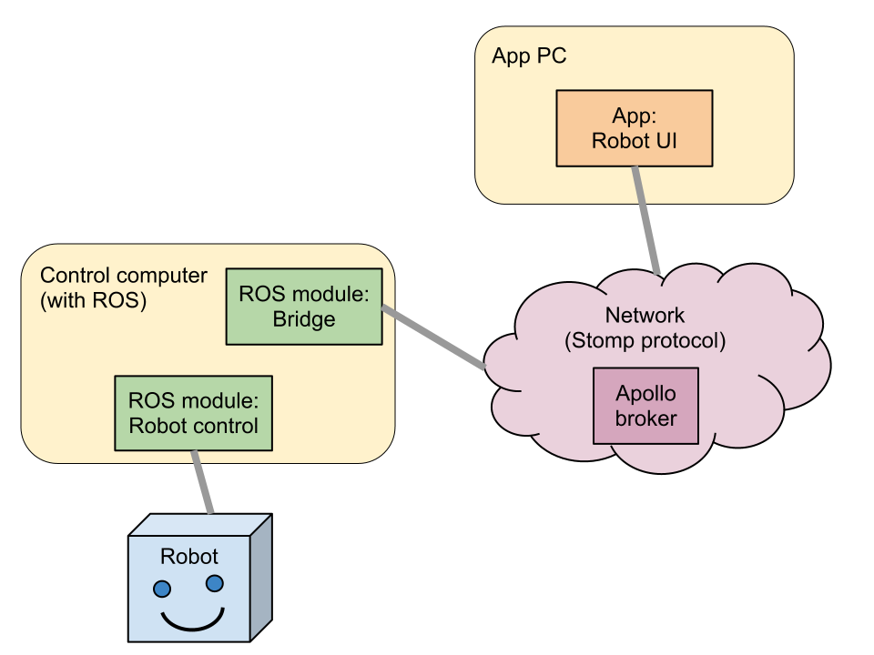
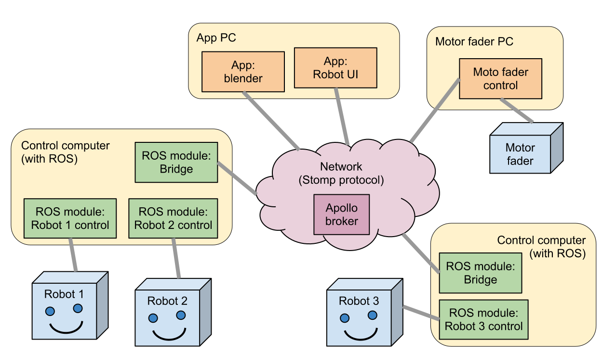

For the robot platform two communication protocols are used. For the direct robot control, the ROS operating system is used, which is a well-known system to control robots, and many “ROS modules” for various purposes are freely available. This makes ROS the natural choice for the robot-side of the system.
On the other hand, the system is designed to incorporate other components such as user interfaces and for instance the Elkerlick system. Therefore a second protocol is used. This is the STOMP protocol. An appollo server is used as the broker.
One of the major challanges is to connect the two protocols in a way that makes working with and extending the framework as easy as possible.
The platform consists of four core components, which are distributed over multiple computers. Each component can be seen as a process running on one of the computers (i.e. the rectangular units in the figure below).
1) The application that provides a user intarface. This user interface can be anything. It can be a widget created with Python and Qt, a Java application, blender, etc. As long as it can communicate messages via the STOMP protocol.
2) The appollo broker provides a mechanism for different processes to communicate via the STOMP protocol. The broker is a server process that can be run on a separate computer or on the app-PC. It will typically not be run on the control computer.
3) The bridge is a ROS module respobsible for translating STOMP messages to ROS messages, and the other way around. The protocol to do this is designed to connect the two networks as transparantly as possible.
4) The robot control is a ROS module that controls the robot. Essentially it translates ROS messages into actions, and publishes robot status with ROS messages.
The four components described above are the minimal set that make up the robot framework. The framework can be made very “compact” and easy to setup by running the control computer on a virtual machine (VM), and running the Apollo broker and user UI app on the host PC.
The proposed platform is designed to scale well, where the apollo network is the connecting factor. Multiple robots can be attached to the platform. They can be shared on one control computer, or on separate conrol computers. Multiple user UI apps can also be used simultaneously. An example is shown in the image below.
For the code of the robot platform we use one code repository for the different components of the system. This repository is a mercurial DVCS hosted at bitbucket.org.
The root directory is divided in several subdirectories. The different ROS modules are placed in rosmodules. The front-end applications are in the apps directory. The robotutils directory is a Python package that provides common functionality for the differen components of the platform. It needs to be installed using python setup.py install before it can be used.
{kind=link}
{kind=link}